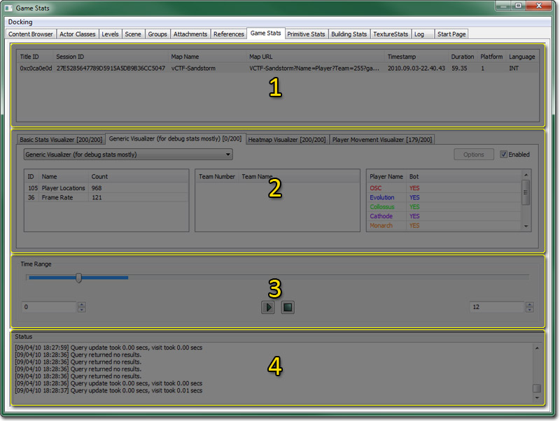
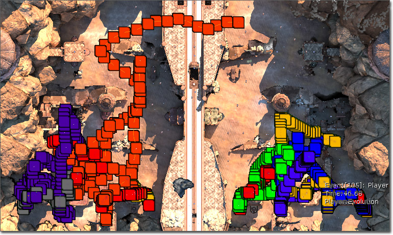
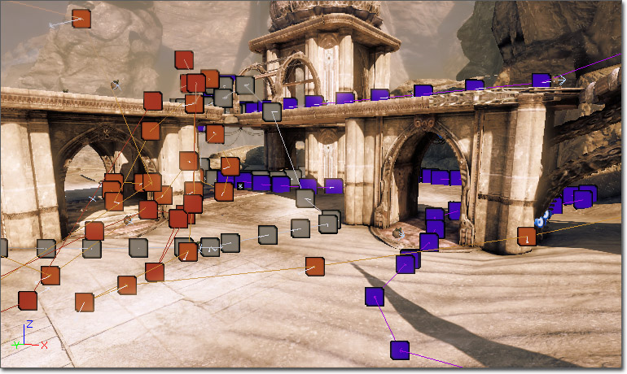
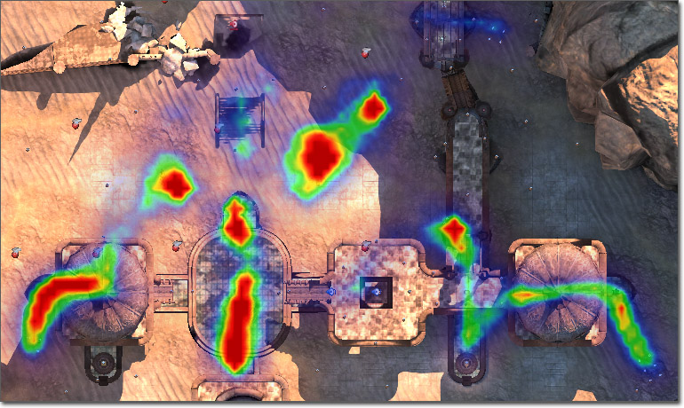
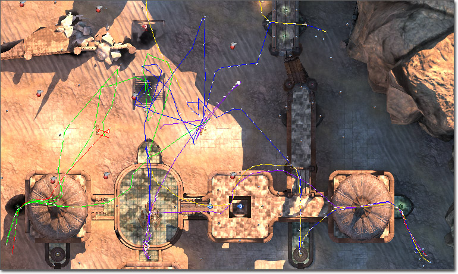
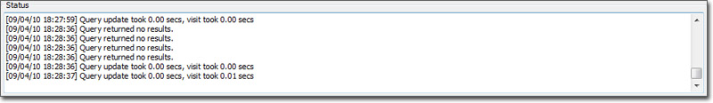

UDN
Search public documentation:
GameStatsVisualizerReferenceCH
English Translation
日本語訳
한국어
Interested in the Unreal Engine?
Visit the Unreal Technology site.
Looking for jobs and company info?
Check out the Epic games site.
Questions about support via UDN?
Contact the UDN Staff
日本語訳
한국어
Interested in the Unreal Engine?
Visit the Unreal Technology site.
Looking for jobs and company info?
Check out the Epic games site.
Questions about support via UDN?
Contact the UDN Staff
游戏统计数据查看器参考指南
文档概要：游戏统计数据查看器中的功能的概述。 文档变更记录：由Josh Markiewicz创建。由 Jeff Wilson更新。概述
本文将讲解用于分析及查看在游戏过程中收集的数据的功能。也详细介绍了针对游戏特定数据扩展统计数据捕获系统的所需的步骤。关于底层系统的更多信息，请参照获得游戏统计数据。 它的思想是在游戏过程中那些统计数据被动态载入到磁盘中，然后最终收集起来并在编辑器中进行查看。您所要记录的内容完全是由您决定的，但是引擎支持收集大量的可能的数据。您可以根据需要减少或扩展要统计的数据种类。 目前，您必须在命令行的尾部添加-gamestats开关来访问新的可视化查看器选卡。例如：UDK.exe editor -gamestats
可视化查看器窗口
以下高亮显示了游戏统计数据窗口中的各个部分。
它分为4个部分：游戏会话窗口
 当成功记录一次游戏会话后，文件将还会被移动到您的GameDir/Stats文件夹中，编辑器将会自动地扫描该文件夹。当加载了适当的地图时，所有和那个地图相关的游戏性会话都会在这里显示。
显示在这部分中的数据完全是用于提供信息的数据，不应该从列标题中清除。
要想开始统计数据，需要点击一个游戏性会话，这将会在可视化查看器下面填充适当的数据。
当成功记录一次游戏会话后，文件将还会被移动到您的GameDir/Stats文件夹中，编辑器将会自动地扫描该文件夹。当加载了适当的地图时，所有和那个地图相关的游戏性会话都会在这里显示。
显示在这部分中的数据完全是用于提供信息的数据，不应该从列标题中清除。
要想开始统计数据，需要点击一个游戏性会话，这将会在可视化查看器下面填充适当的数据。
可视化查看器选卡
 大部分操作都发生在可视化查看器选卡中。 通过选择各种数据点，您可以调整查看器使它仅显示和您的查询相关的数据。这些过滤器和时间控制一同填充了用于显示数据的可视化查看器。即使您的游戏支持其他事件，但将仅会显示真正在那个会话过程中记录的数据，禁用了零计数。
在顶部，每个选卡标签包含了当前的可视化查看器的名称和当前过滤器中的结果的数量。第一个数值是对可视化查看器本身来说有意义的数据点的数量。第二个数值是从数据库查询中返回的结果的数量。可视化查看器可能不会使用数据库中的所有记录，而是从查询中 汇集/生成 数据。这点仅是为了简单地告诉用户可视化查看器 渲染的/处理的 是数据而不是一个空的结果集合。
正下方是一个组合框，允许您改变这个选卡所使用的可视化查看器的类型。
接下来是三个列栏： Events(事件)、Teams(团队)和Players(玩家)。默认情况下，什么都不选择，并表示为”显示所有信息“。您可以通过使用SHIFT+鼠标左击 来选择每一栏中的多个项。如果您仅想查看特定事件的数据，那么高亮选中那个事件即可；如果您仅想查看一个特定的团队，那么选择那个团队将会显示那个团队的所有数据。要想返回到“显示所有信息”的情形，只要按住SHIFT并左击已经高亮选中的部分或点击空白区域即可。
另外，每个选卡的右上角有一个“enabled（已启用）”复选框，它将用于打开及关闭这次查看相关的数据的显示情况。另外，如果可视化查看器支持这个功能，那么将有一个用于弹出可视化查看器的可配置元素的选项按钮。
编辑器启动时扫描您的游戏中的所有可视化查看器，并创建一个选卡。目前，编辑器支持三个基本的可视化查看： 基本统计数据可视化查看、热力图、玩家运动。
大部分操作都发生在可视化查看器选卡中。 通过选择各种数据点，您可以调整查看器使它仅显示和您的查询相关的数据。这些过滤器和时间控制一同填充了用于显示数据的可视化查看器。即使您的游戏支持其他事件，但将仅会显示真正在那个会话过程中记录的数据，禁用了零计数。
在顶部，每个选卡标签包含了当前的可视化查看器的名称和当前过滤器中的结果的数量。第一个数值是对可视化查看器本身来说有意义的数据点的数量。第二个数值是从数据库查询中返回的结果的数量。可视化查看器可能不会使用数据库中的所有记录，而是从查询中 汇集/生成 数据。这点仅是为了简单地告诉用户可视化查看器 渲染的/处理的 是数据而不是一个空的结果集合。
正下方是一个组合框，允许您改变这个选卡所使用的可视化查看器的类型。
接下来是三个列栏： Events(事件)、Teams(团队)和Players(玩家)。默认情况下，什么都不选择，并表示为”显示所有信息“。您可以通过使用SHIFT+鼠标左击 来选择每一栏中的多个项。如果您仅想查看特定事件的数据，那么高亮选中那个事件即可；如果您仅想查看一个特定的团队，那么选择那个团队将会显示那个团队的所有数据。要想返回到“显示所有信息”的情形，只要按住SHIFT并左击已经高亮选中的部分或点击空白区域即可。
另外，每个选卡的右上角有一个“enabled（已启用）”复选框，它将用于打开及关闭这次查看相关的数据的显示情况。另外，如果可视化查看器支持这个功能，那么将有一个用于弹出可视化查看器的可配置元素的选项按钮。
编辑器启动时扫描您的游戏中的所有可视化查看器，并创建一个选卡。目前，编辑器支持三个基本的可视化查看： 基本统计数据可视化查看、热力图、玩家运动。
基本统计数据查看器
基本统计数据查看器用于捕获数据流中包含的所有事件。它更像是个哑终端，把每个已知统计数据显示为玩家世界中的一个平面图标。这个数据在自顶而下的客户端窗口和透视客户端窗口都可以获得。
自顶而下视图最即时地显示了的游戏会话的“整个视图”。您可以看到整个地图和所有事件的位置。选中客户端窗口，鼠标悬停到一个方形图标上，将会在事件上显示类似于工具提示的信息。双击那个事件透视视图将切换到事件发生时所处的位置及方位。
和自顶而下视图类似，透视图也显示了类似于工具提示的信息。 您可以在DefaultEditor.ini文件的[UnrealEd.BasicStatsVisualizer]部分指定要描画的图标及其他属性。+DrawingProperties=(EventID=0,StatColor=(R=0,G=0,B=0),Size=8,SpriteName="EditorResources.BSPVertex")
热力图查看器
热力图查看器把特定的数据点以集合的形式显示为从紫色(几乎不活动)到红色（高活动级别）范围内的颜色。
目前这个查看器主要针对位置和杀害事件，在用户测试游戏时为其提供地图的基本覆盖情况。 这个可视化查看器在多个游戏会话的聚合情况中是最有用的。 热力图的选项对话框为用户提供了设置捕获数据阈值的功能。通过把较高的滑块滑下为一个较低的值，那么所有高于指定值的数据都会标记为红色。从而，所有低于较低滑块值的值将会从可视化查看中隐藏掉。通过调整这些参数，您可以调整热力图使其满足您的需要。另外，有一个屏幕截图按钮，它将为屏幕截图正确地配置自顶而下视口，并把它放到您的GameDir/Screenshots目录中。玩家运动可视化查看器
在这个查看器中玩家运动被表示为一组彩色的线。每个玩家有一条给定的唯一的彩色线，用于播放玩家随着时间所产生的运动。

添加/修改 可视化查看器
默认情况下，每种查看器类型都是在选卡区域创建的。以后将设置 添加/删除 选卡功能，但是目前如果您需要多个同种类型的可视化查看器，那么您可以通过选卡下面的组合框来改变它的类型。在这里，您可以找到所有已知的可视化查看器，并且您可以自由地在它们之间切换。时间滑块
 时间滑块通过在两个样条曲线中指定一个时间范围来进行工作。左侧是时间范围的开始处，右侧是结束处。随着这些数值的改变，蓝色的条将会进行扩展或缩减来可视化地标记范围。
每次更新时间范围时，所有的查询(即时禁用的查询)都会根据会话中新的结果集合进行更新。您可以通过点击滑块中间的拇指按钮来扫过所有的数据，并且可以相应地在时间上向前和向后移动。
时间滑块通过在两个样条曲线中指定一个时间范围来进行工作。左侧是时间范围的开始处，右侧是结束处。随着这些数值的改变，蓝色的条将会进行扩展或缩减来可视化地标记范围。
每次更新时间范围时，所有的查询(即时禁用的查询)都会根据会话中新的结果集合进行更新。您可以通过点击滑块中间的拇指按钮来扫过所有的数据，并且可以相应地在时间上向前和向后移动。
输出窗口

输出窗口用于显示各种源的有用信息，该源可以是工具或者任何单独的可视化查看器。类似于错误和查询结果的信息将显示在这里。